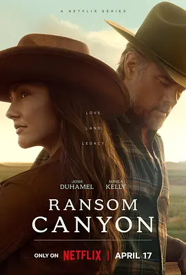

5.4
兰森峡谷 第一季
Ransom Canyon Season 1
2025
美国
评分 5.4
导演:
阿曼达·马尔萨利斯
演员:
乔什·杜哈明 / 敏卡·凯利 / 丽兹·格林尼 / 欧文·马肯 / 塔坦卡·米恩斯
类型:
剧情,爱情,西部
剧情简介
德克萨斯高地的风卷着干草越过峡谷，三个世代经营牧场的家庭就生活在这片粗犷而辽阔的土地上。牧场主科迪每天清晨都会在第一缕阳光下巡河，他习惯了独自与风景为伴，却在一次突如其来的合作谈判中与返回家乡的牧师艾莉相遇。两人原本截然不同的步调，在牧场劳作与社区活动的碰撞中，慢慢产生细微而难以言说的变化。另一边，年轻的布兰南兄弟肩负着家族债务与牧场未来，在暴雨冲垮堤坝时，他一边救牲畜一边与邻家女孩凯丝产生新的情感牵连。复杂的是，凯丝所属的丹顿家族正与布兰南家长期竞争，他们的靠近让两家关系变得更加敏感。在峡谷边生活的塔特部族成员杰克，则不断在传统与现实之间寻找平衡。他热爱这片土地，也逐渐卷入另外两个家庭的矛盾之中，成为情感与利益交织的关键人物。随着春季赶牛、社区舞会与突发山火相继发生，三户人家的纠葛愈发紧密。爱情、责任、忠诚与旧怨在这片荒原上彼此牵引，每个人都在试图守住自己的土地与心意。峡谷静默不语，却见证了这群人如何在日常的碰撞与选择中，重新定义家庭与归属。